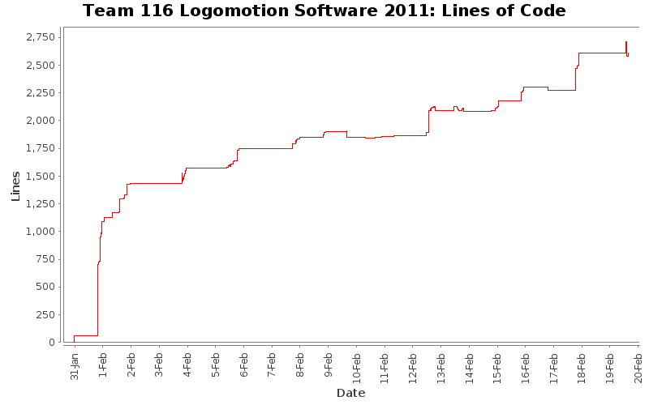

[root]

| Author | Changes | Lines of Code | Lines per Change |
|---|---|---|---|
| Totals | 224 (100.0%) | 2961 (100.0%) | 13.2 |
| kunals | 139 (62.1%) | 1236 (41.7%) | 8.8 |
| spencera | 43 (19.2%) | 1005 (33.9%) | 23.3 |
| dominicn | 13 (5.8%) | 249 (8.4%) | 19.1 |
| alicem | 3 (1.3%) | 181 (6.1%) | 60.3 |
| fionag | 9 (4.0%) | 123 (4.2%) | 13.6 |
| justina | 13 (5.8%) | 74 (2.5%) | 5.6 |
| manderson | 1 (0.4%) | 62 (2.1%) | 62.0 |
| jeffreyl | 2 (0.9%) | 21 (0.7%) | 10.5 |
| anthonyn | 1 (0.4%) | 10 (0.3%) | 10.0 |
Added constant for gear change speed (in percent velocity) to Mobility.
6 lines of code changed in 1 file:
Fixed build errors in MinibotDeployment
18 lines of code changed in 4 files:
Adjust psedo code to at least compile
17 lines of code changed in 2 files:
Grabber looks like it should work, but it would be nice if someone could look over it
11 lines of code changed in 1 file:
added error message in minibotdeployment
1 lines of code changed in 1 file:
Fixed misspelling of allignment to alignment
7 lines of code changed in 1 file:
Added drive straight function to Navigation.cpp
14 lines of code changed in 1 file:
fixxed minibot deployment: added new piston and kunal spellcheck the word allignment again...
10 lines of code changed in 1 file:
Fixed a few build errors and spelling mistakes. Added correct channels for the other two minibot solenoids.
8 lines of code changed in 3 files:
added second piston, other two solenoids for minibot deployment and im giong to use the word fixxed just to add to the statistics
32 lines of code changed in 3 files:
Changed minibot deployment solenoids to a Piston instance
4 lines of code changed in 2 files:
Added Autonomous header file containing Autonomous constructor
42 lines of code changed in 1 file:
Added Autonomous declaration. Note, no autonomous code is present yet.
11 lines of code changed in 1 file:
Added some logging statements
16 lines of code changed in 7 files:
Fixed declaration of MAXIMUM_DEBUG_LEVEL
1 lines of code changed in 1 file:
Added comments and debug level checking to Log::write()
21 lines of code changed in 2 files:
Added a logging class for logging important information, warnings, and errors.
97 lines of code changed in 13 files:
Added some logging code to Mobility
7 lines of code changed in 3 files:
Added declaration for Log in Robot.cpp
11 lines of code changed in 1 file:
added log.h to Minibot Deployment
-Reginald
4 lines of code changed in 1 file:
Deleted some out of date comments in Grabber
0 lines of code changed in 2 files:
Fixed a few errors in EndEffector
12 lines of code changed in 2 files:
Changed all occurrences of :TODO: to @todo so Doxygen will pick them up
9 lines of code changed in 6 files:
Fixed silly errors in MinibotDeployment.cpp
12 lines of code changed in 1 file:
End Effector has been edited
17 lines of code changed in 1 file:
Added some comments to elevator.cpp
10 lines of code changed in 1 file:
fixxed MinibotDeployment header/source
5 lines of code changed in 2 files:
Makes minibot compile, still needs work
9 lines of code changed in 2 files:
fixxed stuff...
10 lines of code changed in 3 files:
Moved Minibot to be constructed during teleop mode only
3 lines of code changed in 1 file:
Renamed GPIO_SLOT to DSIDECAR1_SLOT
7 lines of code changed in 2 files:
Deleted PWM_SLOT since it is not being used and Fixed build errors from the DriverStation.
The Grabber Victors are now using GPIO_SLOT since it is for the Digital Sidecar.
4 lines of code changed in 3 files:
added timer to minibot deployment source file
-Reginald
17 lines of code changed in 1 file:
Fixed Digital Sidecar slot
1 lines of code changed in 1 file:
Added stow piston and wrote the Elevator::set_arm_position() function
20 lines of code changed in 3 files:
aru stole fiona'a account and made changes that will probably be changed soon anyway >_>
24 lines of code changed in 3 files:
Fixed spelling error in Grabber.cpp and renamed Mobility gear shifting functions to be clearer.
12 lines of code changed in 3 files:
5 lines of code changed in 2 files:
Fixed MinibotDeployment header and added shifting pistons to Mobility
18 lines of code changed in 3 files:
fixxed MinibotDeployment header
3 lines of code changed in 1 file:
(62 more)